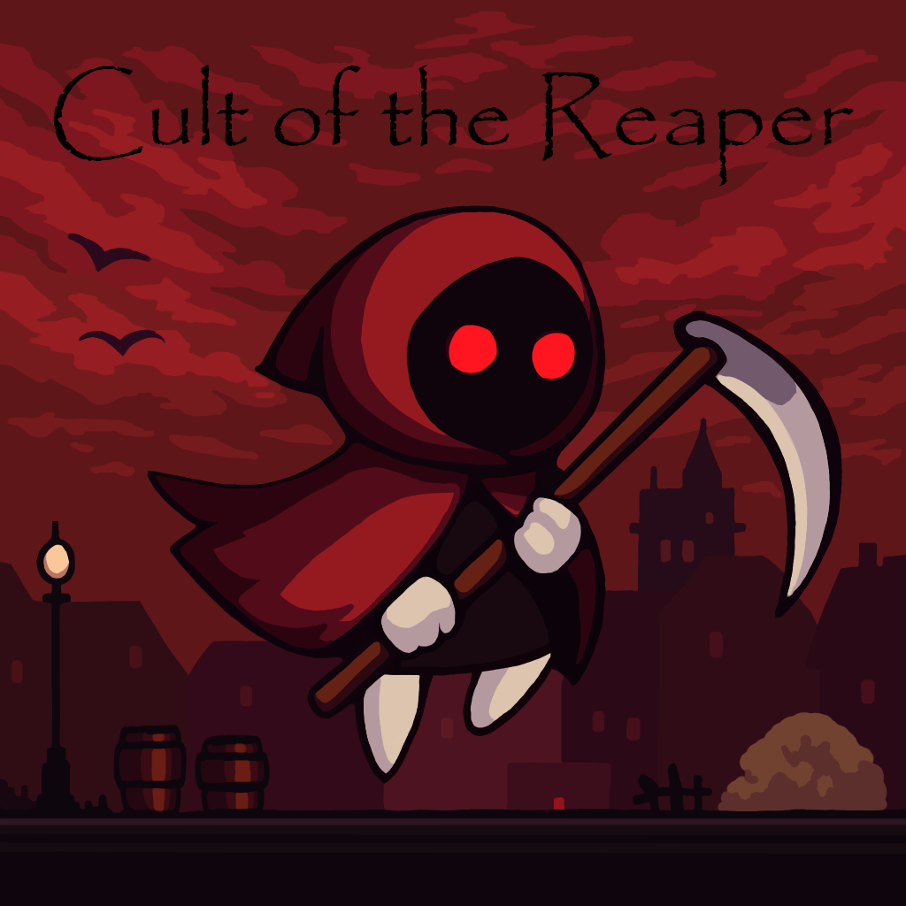
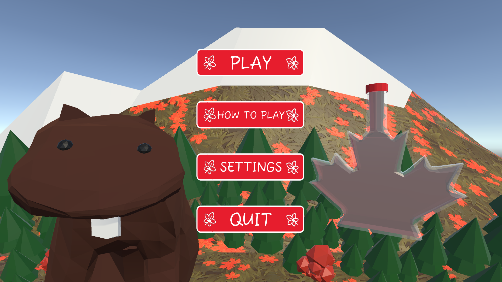

- Game Development Portfolio -
- Demo Reel -
- TFS Capstone Project -

Toronto Film School Capstone Project - Winter 2025
A 2.5D side scrolling action platformer styled after the likes of Trine and Mandragora
Roles:
- Assistant Producer
- Project management (Azure DevOps)
- Tools Engineer
Contributions:
- Dialogue and Quest system
- Scrums/Azure sprint and board management
- PR’s, merge conflicts
Click here for technical details about Project Soul ▼
Language/Engine:
- C# / Unity
Contributed Features:
Dialogue System
- Node-based dialogue editor using ScriptableObjects
- Pre/post node triggers
- For giving or completing quests, providing quest rewards
- Expandable for other in-game events
- Conditional dialogue
- Supported multiple conditions with AND / OR
Quest System
- Utilized ScriptableObjects
- Configurable number and type of quest objectives
- Provided hooks for dialogue or other systems to verify quest status
Project involvement
- Handling PR’s, branching, versioning, releases
- Azure DevOps roadmap, sprints, tickets, regular in-class scrums
- Implementing Quests as designed by the art lead
- School Projects -

Click here for technical details about Deep Space Speeder Park ▼
Language/Engine:
- C# / Unity
Notable Features:
- Independent physics-based maneuvering thrusters, main engines, and brake thrusters
- “Repulsor-like” suspension (similar to “Luke’s land speeder”)
- Particle physics-based “elevator”

Click here for technical details about Space Mini Golf Death Trench ▼
Language/Engine:
- C# / Unity
Notable Features:
- Physics based controller
- Dotween Library for scripted obstacle movement

Click here for technical details about Rocket Ship Valet ▼
Language/Engine:
- Blueprints / Unreal 5
Notable Features:
- Physics based
- Pick up passengers via tractor beam or just crash into them the old fashioned way
- Avoid miniature black holes and springy space mushrooms
- Game Jams -
Cult of the Reaper - Summer 2025 TFS Game Jam Winner

Click here for technical details about Cult of the Reaper ▼
Language/Engine:
- C# / Unity
Contributed Features:
- 2D Character controller, character abilitiy system
- Base enemy AI (basic patrolling, etc)
- Zones/Rooms
- “Harvest” mechanic
- Enemies with a glowing halo are marked for harvest
- When you hide and a marked enemy crosses your path, the halo turns green indicating they are ripe for harvest
- They remain ‘ripe’ for a configurable duration once they pass where you’re hidden
- Strike them while the halo is grain to gain ‘Harvest’
- Eventual plan is to use your harvest score to gate progression in certain areas of the game as it expands

April 2025 TFS Game Jam Winner
What Canadian Beaver doesn’t want to run their own Maple Syrup farm?
Fort Maple was by a team of 3 programmers and 1 artist over the course of a 3.5 day game jam.
Click here for technical details about Fort Maple ▼
Language/Engine:
- C# / Unity
Contributed Features:
- Soundtrack and audio fx
- Farmstand shop (cut due to scope)
- Past Live Service / Backend Projects -
During my time at Cloudhead Games I worked as a Backend Engineer creating the backend platform for Pistol Whip and future titles.
The mandate was to create a High Availability micro cloud product to accomodate current demands and expand for future growth and future games.
Technical Details ▼
Backend
- Python, Django, Mysql
Platform
- Docker, Docker-compose
- Digital Ocean Kubernetes
- Nginx
Pistol Whip 2089
- A Blade Runner / Terminator inspired expansion for the award winning VR shooter Pistol Whip
Pistol Whip Styles
- The Styles system was a major addition to Pistol Whips modifiers and leaderboards, allowing for potentially millions of modifier combinations each with their own custom leaderboards.
Pistol Whip Smoke & Thunder
- A Wild Wild West inspired expansion for the award winning VR shooter Pistol Whip
- Bootcamps -
Unity Bootcamp - University of Victoria - Continuing Studies
A 13 Week Unity Bootcamp instructed by Charles Hache, a Unity Certified Instructor
Features
- First began Space Mini Golf Death Trench during this bootcamp
- Uses point lights, spot lights, emissive materials
- Dotween for scripted obstacle motion
- Object pooling for projectiles
- Mixed physics controller (main engines used physics)
- Particle FX
- Weapon system provided configuration of:
- Shot rate, volley rate, volley size, number of weapon barrels
- Udemy Courses -
All courses listed are using Unity and C#
Features
- Physics flight controller
- Highly configurable flight characteristics
- Lift, Lift curve, Engine power band, roll rate, etc
- Animated control surfaces
- Ailerons, Flaps, Rudder, Elevator, Propeller, Steerable wheels
- Save configurations to scriptable objects to quickly create persistant profiles for different styles/difficulties of flight or different aircraft performance
- Modular architecture allowing easy expansion for a viarety of aircraft configurations
- ex. Multi-engine, wheel configuration
The Beginners Guide to Games AI
Features
- A* navigation with waypoints
- NavMesh layers and masks
- Crowd behaviour, basic flocking
- GOAP, Behaviour Trees
Unity Dialogue & Quests: Intermediate
- Course no longer available - was provided by GameDev.tv via Udemy
Features
- Node based dialogue editor with draggable nodes
- UI Layout groups
- Save quests and dialogue to scriptable objects
- Hooks for giving or completing quests, quest objectives, and quest rewards through dialogue or other in game events
- Ability to chain quest conditions with predicates (and/or/not)
Learn to Create a Metroidvania Game
Features
- 2D Platformer w/2d animations, patrolling enemies, player abilities
- Multi-phase boss fight
- Multiple zones/scenes
- World Map
- Mini Map
- Game save/load
Features
- Android build
- Touch controls
- Level Loader / Level Select Screen
- Boss sequence
- Unity Ads (Legacy)
- Banner, Interstitial, Reward Ads
- Object pooling (of projectiles)
Features
- Waypoint system with bezier curves to produce smooth enemy paths
- Includes editor gizmos for path visualization
Features
- Editor tools provide a configurable mission editor
- Ex. What targets to hit, how long you have to hit them, does the mission reset on player death, etc.
- Configurable lighting sequences, triggerable on mission completion
- Bumpers, Flippers, Targets, Plunger
Features
- Clone of the Ludo board game
- Home base area, main routes, home routes
- Emulated physical dice
- Basic AI Players
- Bumping players
- Player select screen